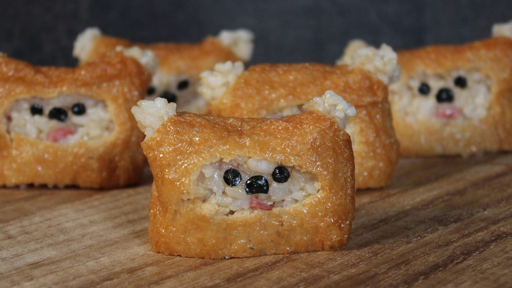

Ewok Sushi

YOU WILL NEED:
- 1 Package aburaage tofu pouches
- 1 Sheet Seaweed
- 1 Slice salami
FOR THE RICE:
- 2 Cups brown rice
- 3 Cups water
- 1/4 Cup rice vinegar
- 3 Tablespoons sugar
- 1/2 Teaspoon salt
STEPS:
- Rinse the brown rice until water runs clear. Soak in cold water for 30 minutes, then drain.
- In a large saucepan add the rice and 3 cups of water. Bring to a boil.
- Cover and reduce heat, then simmer for 20 minutes until the water is absorbed. Remove from heat, let sit for 10 minutes, covered.
- Transfer the rice into a medium bowl and fold in the rice vinegar, sugar, and salt. Let cool slightly.
- Prepare tofu pouches according to the package.
- Pull apart each pouch and stuff with the rice mixture.
- Cut the corners off both sides of the pouch and push the rice through to form the fluffy ears.
- Use kitchen shears to cut away the middle part of the pouch to reveal a face area.
- Cut or punch out seaweed to create eyes and a nose, and cut a small piece of salami for the mouth.
- Place onto the rice balls to serve.
Thanks goes to Admiral Achbars Snack Bar. Its not a trap! https://www.starwars.com/news/yum-num-ewok-sushi